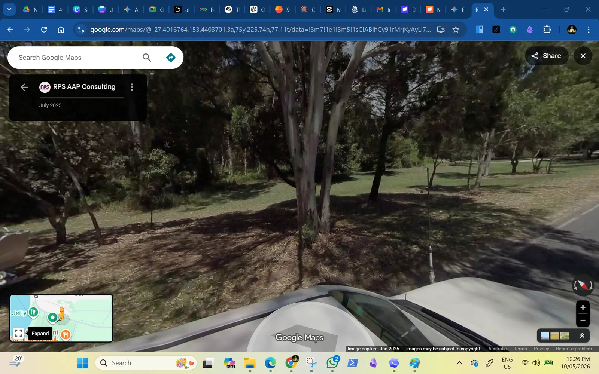
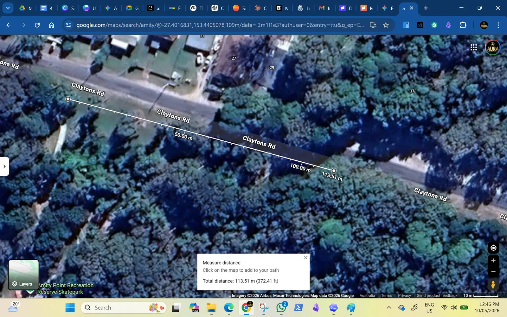
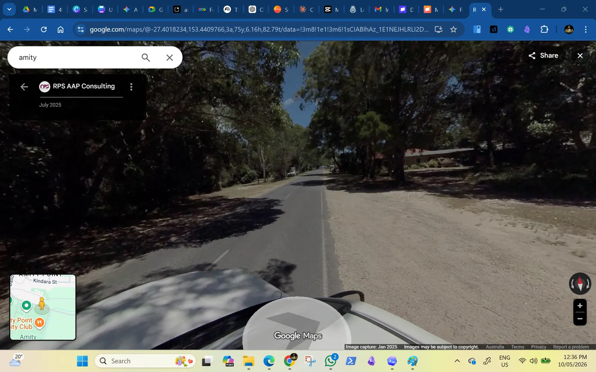
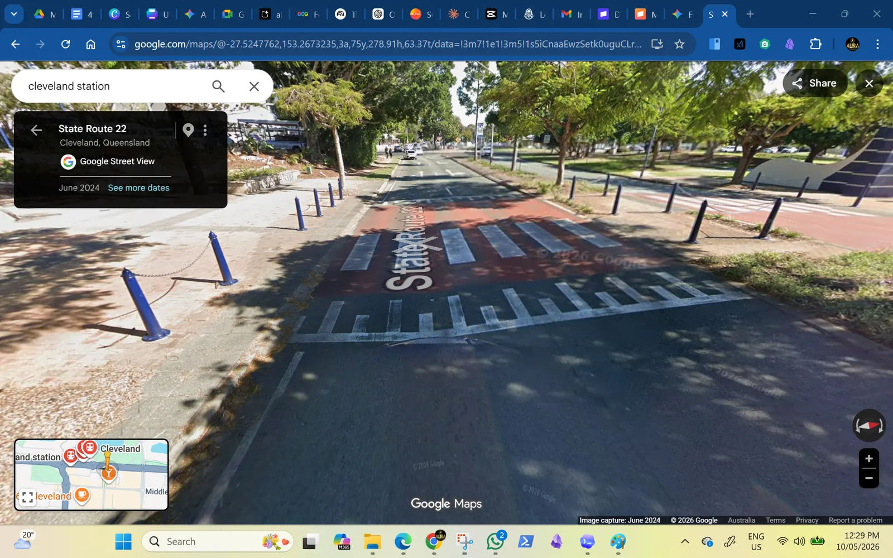

Site and access
A long narrow site needs rhythm, not clutter.
The proposed exercise strip is roughly over 100 metres long and 15-20 metres deep, with sparse trees and a road edge that already attracts crossing, parking, tour and wildlife-viewing movement. The site plan should spread people out without making the park feel empty.

Scale logic
Plan the strip as a sequence of small destinations.
Not every metre needs equipment. The stronger layout is a few clear activity pockets with open space between them: enough interest to attract people, enough breathing room for shade, access, future planting and wildlife-aware movement.



